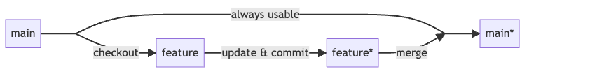
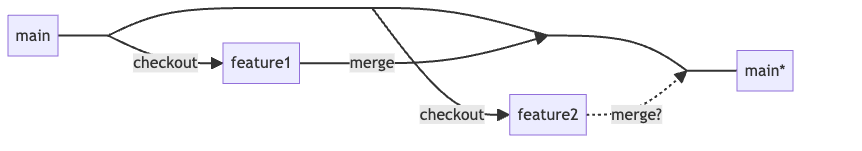

Maintaining a software project is not easy. You may encounter the following problems:
A crucial part of maintaining an open-source software is version-control. In the following, we will introduce the best tool for doing version-control: Git.
A repository, also known as a repo, is basically a directory where your project lives and git keeps track of your file’s history.
git init to make it a git repository.git add to add files to the staging area, and use git commit to commit the changes to the repository.git checkout to switch between commits.git diff to see the changes between commits.git reset to reset the current HEAD to the specified state.git status to see the status of the working directory, staging area, and repository.git log to see the history of commits.Now that you have configuration all setup, we will get you familiarized with a few concepts. In Git terminology, Remote refers to a repository that is located on a server or another computer, rather than the user’s local machine. It’s a version of the repository that is used by teams to collaborate on a project. Remote repositories can be accessed and manipulated through Git commands, allowing users to push changes or fetch changes made by others. Remote repositories can be hosted on Git hosting services like GitHub, GitLab, or Bitbucket, or set up on a personal server. Multiple users can access and modify the same remote repository, making it easy for teams to work on a project together.
git remote add <remote-name> <url> to add a remote repository.git push <remote-name> <branch> to push commits to a remote repository.git pull <remote-name> <branch> to fetch from and integrate with another repo or a local branch.A branch in Git is a lightweight pointer to a specific commit. It allows developers to work on new features or make changes to the codebase without affecting the main codebase. Branches are created and can be switched between easily, and changes made in one branch do not affect other branches.
To create a new branch in Git, you can use the command git branch <branch_name>. This creates a new branch but does not switch to it, so you will be working in the same branch until you use the command git checkout <branch_name> to switch to the new branch. Alternatively, you can use the command git checkout -b <branch_name> to create and switch to the new branch at the same time.
To end a branch, you can use the command git branch -d <branch_name>. This deletes the specified branch, but only if it has been fully merged into the main branch. If you want to delete a branch whether it has been fully merged or not, you can use the command git branch -D <branch_name>. It’s important to note that once a branch has been deleted, you cannot restore its commit history.
Here are two example workflows managing your project with git.
Example 1: develop a new feature 
Example 2: develop two features 
It is not possible to cover all of the feature of git. We will list a few useful commands and resources for git learning.
# global config
git config # Get and set repository or global options
# initialize a repo
git init # Create an empty Git repo or reinitialize an existing one
git clone # Clone repository into new directory
# info
git status # Show the working tree status
git log # Show commit logs
git diff # Show changes between commits, commit and working tree, etc
# work on a branch
git add # Add file contents to the index
git rm # Remove files from the working tree and from the index
git commit # Record changes to the repository
git reset # Reset current HEAD to the specified state
# branch manipulation
git checkout # Switch branches or restore working tree files
git branch # List, create, or delete branches
git merge # Join two or more development histories together
# remote synchronization
git remote # Manage set of tracked repositories
git pull # Fetch from and integrate with another repo or a local branch
git fetch # Download objects and refs from another repository
git push # Update remote refs along with associated objectsA more detailed introduction could be found in this lecture.